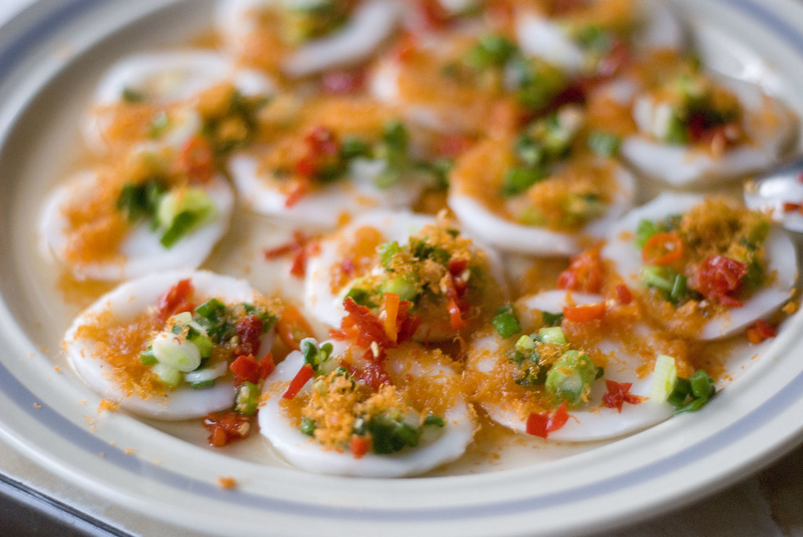
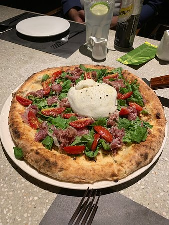
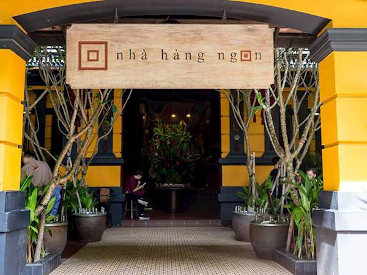

Get ready for an immersive cultural experience through culinary!
One of the most famous dish in Ben Thanh Market in district 1 is this rice cake call Banh beo. Make with grinded rice flour and top off with caramelized meat and shrimp, banh beo leaves you with a creamy texture of the batter and savoury of the toppings. It is usually serves with sweet fish sauce, lettuce, shredded carrot, and a glass of ice tea
The most famous breakfast in Ho Chi Minh is this broken rice dish with grill side ribs and an omelette. Also top off with sweet fish sauce and green onion for a more flavorful dish. People eat com tam everyday in Sai Gon, for every meal. There are plenty of com tam restaurants that have been in operation for more than a decade.
Tried this tasty bowl of Hu Tieu at a decade old restaurant located in a small alley in District 1. Their secret recipe broth is amazing. You can choose the protein to go with your hu tieu such as seafood, beef, chicken, meat, etc. And the ice tea here, also at most of Vietnamese restaurants, ice tea is free.
This specialty dish from the Midside Viet Nam is personally one of my favorite. It has kind of a slight smell of cucumin and ginger at first, but the taste is wonder. I can not describe that feeling in words, so come try it right when you got here!
Come try the cheapest buffet ever in district 1, 2, and 3. It has all kind of vegan food, soup, noodle, even the sauces and broth are vegan. Vegan Buffet in Viet Nam offers more than 100 dishes of vegan food, made from the heart of the chefs and volunteers.
“Magic of Pizza” is the origin of our restaurant. Back in 2005, the founder of Pizza 4P's, Masuko, built a wood-fired pizza oven with his friends in the backyard of his house. He invited his friends and family and hosted pizza parties. In 2011, the original members who once made the pizza oven gathered again and started the history of Pizza 4P's. We named our restaurant Pizza 4P's, based on our vision, Make the World Smile "For Peace."
Thronging with locals and foreigners, this is one of HCMC's most popular spots, with a large range of the very best street food on offer in stylish surroundings across three levels. It's set in a leafy garden ringed by food stalls, wtih each cook serving a specialised traditional dish, ensuring an authentic taste of Vietnamese, Thai, Japanese, Chinese or Korean cuisine.
